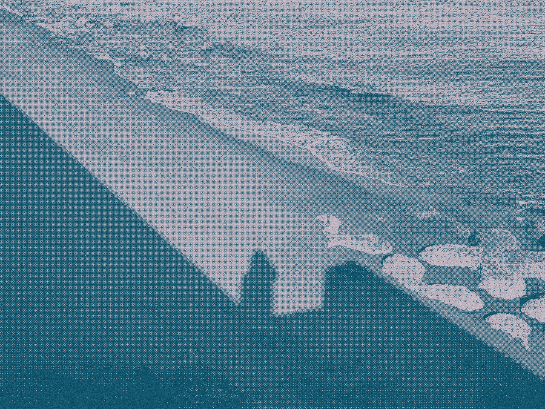

I’m Yi Hui, welcome to my internet home.
I’m tending to this online space like my own home, where I share about myself, showcase some of my works and projects, and my favourite things. Take your time to browse around. Thank you for visiting.
I’m currently thinking about personal websites, and how they can bring people closer together on the internet.
This photo was taken in March 2026, at the coast at Ibusuki, southwest of Japan on the island of Kyushu.
I felt an inexplicable joy running by the sea, forever etched in my memory.